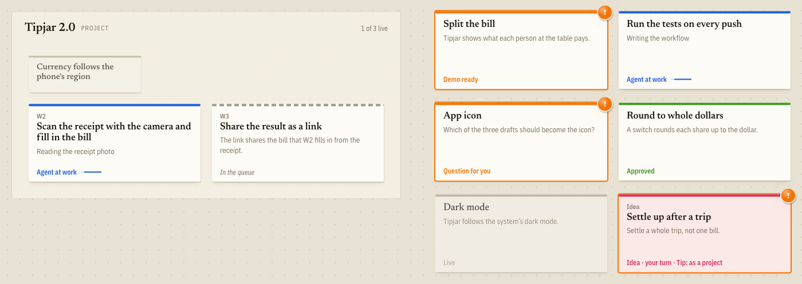

Canvas
Space is memory.
Every task is a card you place where it belongs, and there it stays. Projects hold their workstreams; related work sits together. You know where things are the way you know where things are in a room. The state is a colour, not a column: a card does not move when its agent is done.
- Agent working
- Waiting for you
- Approved
